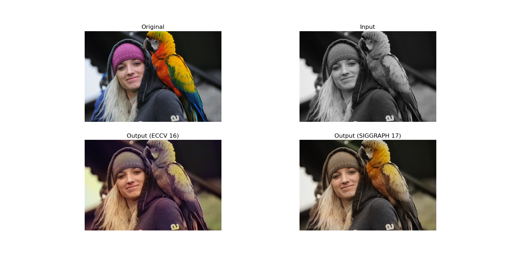
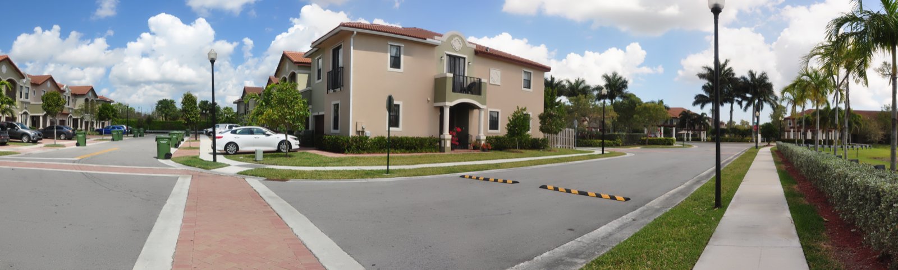

01Blogs
Engineering write-ups where the math is shown and every number is measured — LLM inference on a MacBook Pro, INT8 quantization, retrieval geometry, medical segmentation, and the ipic build log.
Scaling a vector index to 350,000 files: sharding, backpressure, and a CLIP vision lane→
Part 3: the v2 rewrite — per-root shards with bounded-channel backpressure, a CLIP vision lane that nearly starved, a compute budget, measured results at 350k-file scale, and what shipped after: store compaction, whole-home default scope, v0.1.1 as a macOS DMG.
Serving an LLM on a MacBook Pro: mlx-lm vs llama.cpp, from 1 user to 32→
mlx-lm vs llama.cpp under 1 fairness contract: 45–56 tok/s single-stream, and a throughput curve flat from 1 user to 32. Crash forensics find the lock.
Multi-instance LLM serving: why 3× the memory bought only 9% more throughput→
K process-isolated instances behind 1 queue: +9% for 3× the RAM. The arithmetic says why — 1 instance already saturates the M4 Pro's memory bus.
How INT8 quantization works: calibration, error bounds, and why accuracy barely drops→
What INT8 quantization is and why it barely hurts — the affine map derived, the s/2 error bound, three calibrators that disagree on purpose, and the per-channel trick worth +6 dB.
Cosine similarity vs Euclidean distance: what matters for image search→
How search-by-image works, from zero: the cosine/L2 proof, what precision 1.00 with recall 0.87 actually diagnoses, and the arithmetic that decides when exact search dies.
Class imbalance in medical segmentation: why cross-entropy fails and Dice loss works→
In medical segmentation the target — a coronary vessel — is 0.39% of the pixels, and the standard loss trains a model that's great at everything else. Derived, then fixed with Dice.
How neural style transfer works: VGG features, Gram matrices, and receptive fields→
Style transfer explained from zero — and its key object provably discards all position information (measured: 1.7e-18). Plus the receptive-field arithmetic behind the layer choices.
On-device semantic file search in Rust: the ipic engine architecture→
Part 1 of the ipic build log: the first engine — 3 retrieval lanes fused by RRF, an i8-quantized mmap'd vector store, whisper on CPU, crash-safety by job state. One focused week, 23 commits.
Hybrid search with reciprocal rank fusion: semantic, keyword, filename, and vision lanes→
Part 2: the ranking math — weighted reciprocal rank fusion across semantic, vision, keyword and filename lanes, derived from requirements and computed on a worked example. No re-ranker, 4–10 ms.
02Open source
Side projects with real inputs and real outputs — ipic, a file manager that searches your entire home directory by meaning, fully offline; plus colorization, style transfer, and stitching rebuilt from the papers.

ipic — a file manager that understands your files
Fully on-device RAG over your entire home directory: type or speak a query, get ranked results across text, PDFs, audio, video and images. Rust, local whisper transcription, i8-quantized vectors — no cloud, ever. Shipped as a macOS DMG.

Colorizing black-and-white photography
ECCV'16 and SIGGRAPH'17 colorization run side by side over Ansel Adams landscapes and personal photos. Four-panel grid: original, B&W input, both outputs.
Painting photos with the style of other art
Gatys et al. (2015) reimplemented from scratch — content + style aligned through VGG feature maps and Gram-matrix losses.

Stitching N photos into 1 wide view
Feature matching → homography → warping → blending, end to end on OpenCV. 3 overlapping frames fused into a 3815-px panorama.
More repos on GitHub
ArterySeg
U-Net++ · ResNet50 · TensorRT →Coronary artery segmentation — U-Net++/ResNet50 encoder, Sobel edge-enhancement layer, spatial attention, TensorRT export.
find-me-lens
P 1.00 · R 0.87 · 30 ms →Content-based image retrieval over FAISS, benchmarking five CNN backbones. 1.00 precision / 0.87 recall at ~30 ms.
VideoStabilization
Affine · trajectory smoothing →Affine trajectory extraction → constrained-optimization smoothing → path-following crop.
pytorch-cpp-tensorrt
5-stage pipeline →PyTorch → ONNX → TensorRT → C++ walkthrough, 1 notebook per stage. The pattern I use in production.
Condio
multiprocessing →Multiprocessing audio format converter across CPU cores.
LLMfromscratch
36 projects →Active fork of a 36-project build-every-layer LLM manual.
03Work
Two production AI systems owned end-to-end — an adaptive-RAG interviewer serving 500+ concurrent users, and real-time X-ray restoration on live cath-lab feeds. The numbers on each card are the numbers they run at.
Adaptive RAG — a stateful interviewer that listens
Built the retrieval and reasoning core behind an AI interviewer that adapts in real time — three parallel retrieval paths, hybrid search, cross-encoder re-ranking, and an eval harness as the source of truth. Live for 500+ concurrent users at 99.9% uptime.
Real-time blind X-ray image super-resolution
Super-resolution and denoising on live cath-lab feeds — owned end-to-end from model R&D through INT8/FP16 quantization to TensorRT/C++ serving, plus the automatic QCA pipeline cardiologists use mid-procedure. Three patents applied for.
04Experience
Griphic — Delhi, India
Jan 2026 — PresentAn AI interviewer that listens — scoring answers, scaling difficulty live, asking real follow-ups. I built the brain behind it.
- Stateful LangGraph agent; RAG over three parallel retrieval paths, hybrid search, cross-encoder re-ranking — 0.95 Recall@5 over 10K+ docs.
- Query latency 2.5s → 0.8s (−68%); domain-query F1 +42%.
- Eval harness (recall, faithfulness, answer-relevance) with cited, traceable output.
Today: 500+ concurrent users · 99.9% uptime.
Innvolution Healthcare — Bangalore, India
Sep 2023 — Dec 2025Joined as an intern on X-ray image quality; left two years later as ML team lead. Shipped AIMAG — super-resolution and denoising on live cath-lab feeds.
- AIMAG end-to-end — R&D, data, quantization, release — at $200K+ ARR.
- PyTorch → ONNX → TensorRT, INT8/FP16, FastAPI/C++: 600+ FPS on RTX 4090, −70% latency, <5% accuracy loss.
- Automatic QCA pipeline in <4 s; U-Net++ (ResNet50) at 0.94 Dice. Led a 6-engineer team.
Motion-compensated stitching & denoising for DSA — +20% clarity at <2-px registration error.
- AI-powered X-ray image enhancement (202541071194) — single-image blind super-resolution & denoising.
- Enhancing body part from angiography loop (202441009957) — dynamic roadmap generation from DSA sequences.
- Image enhancement in X-ray fluoroscopy (202541041511) — real-time contrast enhancement & denoising.